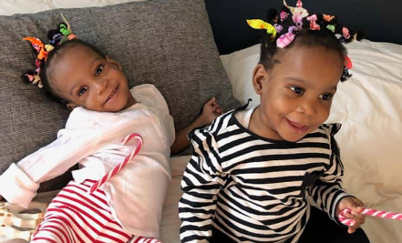

Bissie et Eyenga
Sont rentrées
Au cameroun
en bonne santé
Pathologie : Jumelles siamoises
Reliées par le thorax et le foie
Merci de leur avoir offert une nouvelle vie !
Les petites sœurs siamoises sont de retour au Cameroun ! Sous les cris de joie
et les applaudissements, Bissie et Eyenga sont arrivées le 21 janvier 2020 à
l’aéroport de Yaoundé. Après des examens médicaux rassurants, les anciennes
sœurs siamoises, devenues jumelles, sont enfin de retour dans leur famille. Une
nouvelle vie a commencé pour les fillettes, grâce à la mobilisation d’une
formidable chaîne de solidarité à laquelle les donateurs de
La Chaîne de l’Espoir ont participé par leur grande générosité.
Un immense merci du fond du cœur !
Une naissance difficile
Rappelez-vous, il y a quelques mois, nous vous demandandions de vous mobiliser
pour aider Bissie et Eyenga. Nées en novembre 2018 à Ayos, dans le centre du
Cameroun, les deux enfants étaient unies au niveau du foie et de la base du
thorax. Malgré la complexité de la situation, la jeune maman et ses deux petites
jumelles ont survécu à l’accouchement. Mais, en Afrique, une telle naissance est
synonyme de malédiction.
Au sein même de sa famille, Mayah, la maman des fillettes, a été victime de
rumeurs, de stigmatisation et de rejet.
Elle a fui son village natal et trouvé refuge à l’hôpital gynéco-obstétrique et
pédiatrique de Yaoundé.
Une opération impossible au Cameroun
À leur arrivée à l’hôpital de Yaoundé, Bissie et Eyenga sont prises en charge
par le Dr Faustin Mouafo et étroitement surveillées. Cependant, aucune opération
ne peut être engagée. L’intervention de séparation des fillettes nécessite un
très haut niveau de qualification et d’expérimentation, alors même que cette
pathologie est très rare.
Le Dr Mouafo sollicite alors le Pr Pierre-Yves Mure, chirurgien pédiatrique aux
Hospices Civils de Lyon, engagé depuis des années auprès de la population
camerounaise. Celui-ci répond à l’appel : profitant de sa présence au Cameroun
quelques jours plus tard, il ausculte les 2 sœurs. Après un scanner, il constate
une forme favorable pour séparer les deux siamoises.
L’intervention chirurgicale pour séparer les fillettes n’est pas possible au
Cameroun. Une formidable chaîne de solidarité se met alors en place pour les
faire venir en France.
L’exceptionnelle générosité de chaque maillon de la chaîne
Pour sauver Bissie et Eyenga, une chaîne de solidarité se met alors en place :
les Hospices Civils de Lyon mettent à disposition leur infrastructure,
le gouvernement camerounais participe au financement ; de notre côté, à La
Chaîne de l’Espoir, nous organisons le transport et une famille d’accueil attend
Mayah et ses filles en France… Nous nous engageons aussi à cofinancer les soins
et avons pour cela sollicité avec succès la générosité de nos donateurs : le 1er
novembre 2019, un an après leur naissance difficile,
Bissie et Eyenga, accompagnées de leur maman, sont accueillies chaleureusement
par les familles d’accueil de La Chaîne de l’Espoir.
5h d’intervention,
une vingtaine de soignants
Le mercredi 13 novembre, Bissie et Eyenga sont enfin séparées, les petites
siamoises deviennent des sœurs jumelles. Deux équipes médicales, chacune dédiée
à une fillette, sous les ordres du Pr Pierre-Yves Mure, ont réalisé une
opération d’une extrême complexité. Les sœurs restent quelques temps en
réanimation et sont ensuite transférées dans le service de chirurgie pédiatrique
de l’hôpital Femme-Mère-Enfant des Hospices Civils de Lyon, pour des soins de
suite et de rééducation. Leur devenir psychologique et psychomoteur est
surveillé de très près également. Une seconde opération est réalisée quelques
jours après pour opérer la pathologie cardiaque d’une des fillettes. Le 6
décembre, l’opération de Bissie est couronnée de succès. Les petites filles
peuvent enfin grandir séparées, comme tous les autres enfants.
Votre solidarité les fera grandir
Hors de danger, les fillettes sont sorties de l’hôpital le 20 décembre 2019 et ont rejoint leur famille d’accueil pour les fêtes de fin d’année. Et le dimanche 21 janvier, elles s’envolaient vers le Cameroun, pour vivre leur vie d’enfant, sous le regard heureux de leur maman. Un début de vie difficile, dramatique, mais aussi émouvant et plein d’espoir, sous le signe de la solidarité.
